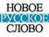

Periodicals of The Third Wave
Russians in America: The Third Wave
Periodicals

Newspapers
The New Russian Word (Новое Русское Слово), the oldest Russian language newspaper in the United States, took note of and began to cater to the new audience of Russian émigrés. But there was a gap of generations, of historical political background, values and traditions. Новый Американец emerged as clear competitor for The Third Wave audience and was successful for the years 1981-1984. From 1981 to 1982 the newspaper was headed by Sergey Dovlatov, who would gain fame as a writer on his own. There was also the New York, Новая газета. On the West Coast the San Francisco based Русский Голос continued for years and the Los Angeles based Альманах Панорама attracted the participation of many writers living in the United States.
Journals
Новый Журнал had existed since 1946, but under the editorship of Roman Goul focused largely on Second Wave authors and memories of The First Wave. Russian Literary Triquarterly published mostly translations into English, and when it did publish Russian texts, they too dated to earlier periods. Several short-lived efforts came into existence. They included Gnosis (Гносис) Sagittarius (Стрелец), Transactions of Russian Scholars (Записки Русских Ученых), Glagol (Глагол), etc. More than one writer and critic complained that the emigration had more writers than readers!
Almanacs
A few series announced their intentions to publish on a regular basis. Among them was а "Collection of Russian poetry" and Blue Lagoon.
Periodika Abroad
Much of the publishing industry was located in Europe or Israel. Writers did not feel restricted by geography, and nor did readers. There was a vibrant publishing community to which many of the Russian writers in America could turn. There was the French based Kontinent (Континент), Sintaksis (Синтаксис), the German based Grani (Грани), the Israeli 22 (Двадцать два) .
Documenting Periodical Literature
Leonid Khotin published the Abstracts of the Russian and East European Émigré Press from 1982. Originally based at the University of California Berkeley, it has been replaced by the Russian Zarubezhnaya literatura Зарубежная Периодическая Печать на Русском Языке: Ежеквартальный реферативный журнал.
Who, What, Where and When?
Internet Links
Другие Ссылки